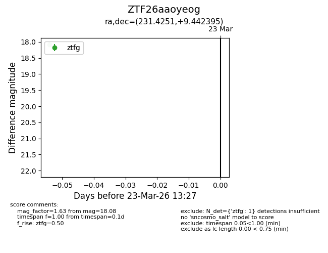
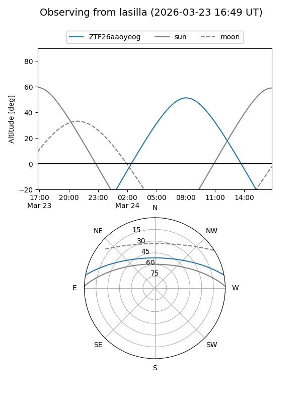
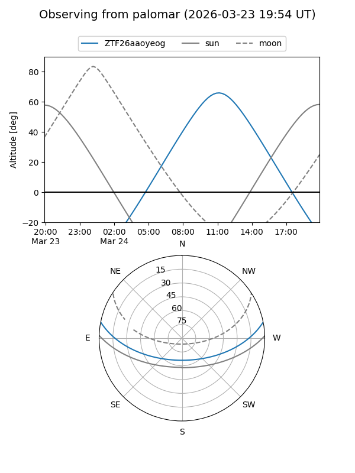

ZTF26aaoyeog
Target ZTF26aaoyeog at 2026-03-23 13:29
Aliases and brokers:
FINK: link
Lasair: link
ALeRCE: link
alt names
ZTF26aaoyeog (ztf,fink_ztf)
Coordinates:
equatorial (ra, dec) = 231.4251,+9.44240
equatorial (HMS+DMS) = 15:25:42.02,+09:26:32.62
galactic (l, b) = (14.4379,+49.57500)
Flags:
Photometry:
last ztfg=18.08
1 ztfg detections
Lightcurve

Visibility


Additional plots